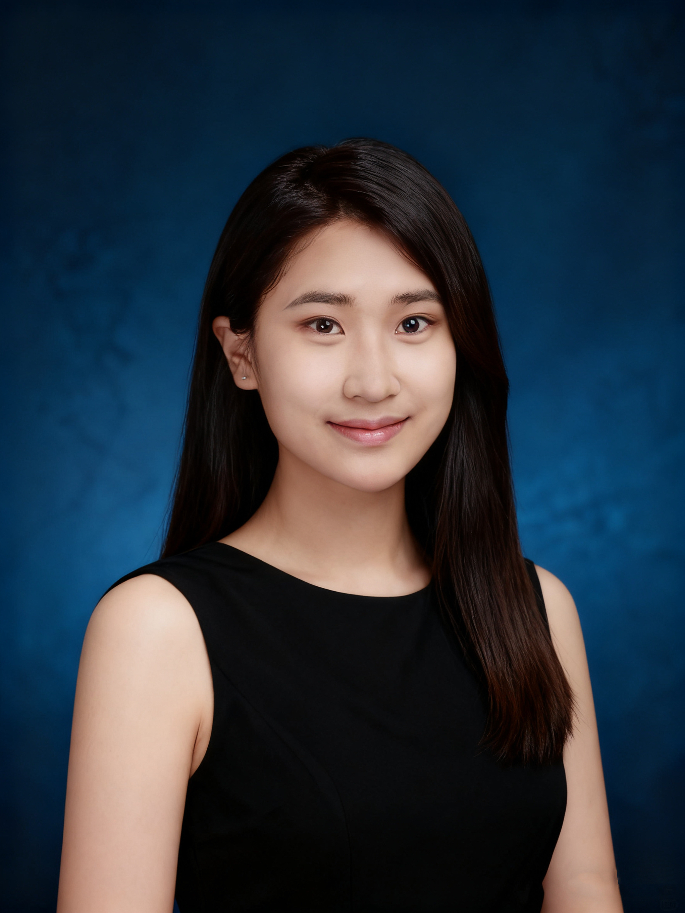

Zhiwei Li
I am an undergraduate student at Duke University / Duke Kunshan University majoring in Applied Math and Computational Science, Computer Science track. I am interested in AI agent and systems, machine learning, and product-oriented engineering, with a strong focus on building tools that are reliable, scalable, and actually used.
I have hands-on experience spanning AI research, backend systems, data automation, and technical product development. I am particularly comfortable moving between research prototypes and production systems.
Courses: Machine Learning, Programming and Database (A+), Probability and Statistics, Linear Algebra, Calculus, Computer Graphics (A+).
Honors: Dean's List Fall 2024, Dean's List Spring 2025, Dean's List Fall 2025.
Email: zl457@duke.edu · GitHub: zhiwei531 · LinkedIn: Profile CV: (PDF) ·
Projects
Syllanize is a course syllabus parsing and visualization project designed to transform unstructured PDF syllabi into structured, comparable academic data. The project addresses a common student pain point: course requirements, grading schemes, and workload information are often buried in long, inconsistently formatted syllabus documents, making cross-course comparison difficult.
I designed and implemented an LLM-powered parsing pipeline that automatically extracts graded components (e.g., exams, homework, quizzes, projects, participation) from syllabus PDFs. Using GPT-based extraction with confidence filtering, the system converts raw syllabus text into structured records while handling diverse layouts, noisy formatting, and ambiguous descriptions. Low-confidence items are automatically filtered to ensure data reliability.
The pipeline supports batch processing of multiple syllabi and outputs a unified dataset that enables downstream visualization and analysis of grading structures across courses. Parsed results can be used to compare workload distributions, identify assessment patterns, and support data-driven course selection. The project demonstrates how LLMs can be applied to academic document intelligence, replacing brittle rule-based parsing with flexible, example-driven extraction.
Emergence + Interactive Behaviors as Forms is a semester-long computational art and generative systems portfolio developed for the Computer Graphics course at Duke Kunshan University. The project explores how visual form, rhythm, and meaning can emerge from the interaction between algorithmic rules, randomness, and user input, rather than being explicitly designed frame by frame.
Across six generative projects, I designed systems driven by loops, parametric rules, stochastic variation, and real-time interaction through keyboard and mouse input. Instead of producing fixed outcomes, each system was constructed to reveal different behaviors over time, allowing patterns, structures, and visual aesthetics to emerge dynamically from the underlying logic. The work emphasizes process over result, treating algorithms as expressive mechanisms rather than deterministic tools.
Interaction plays a central role in the project. User inputs directly alter system states, transforming the viewer into an active participant whose gestures reshape motion, balance, and visual outcomes in real time. This approach highlights computation as an artistic language in its own right—one where autonomy is embedded in system design and aesthetics arise from emergent behavior. The portfolio reflects a growing practice centered on generative thinking, interactive systems, and algorithmic form-making.
Research
I serve as a research leader for the ChatDKU project, where I am responsible for both system architecture and the deployment of large-scale AI agents in real-world academic environments. I lead feature development including SQL-agent extensions, complex multi-stage retrieval pipeline design, and the integration of state-of-the-art Retrieval-Augmented Generation (RAG) methodologies using DSPy and LlamaIndex.
I also maintain the lab’s backend infrastructure through performance monitoring, system diagnostics, and management of Django services and databases (Redis, Chroma, PostgreSQL). I introduced modular refactoring, CI workflows, and Git-based version control practices, supporting over 50 daily active users and improving response accuracy by approximately 35% in real-world usage.
Research team member responsible for literature review, biological modeling support, and scientific visualization. I also led visual communication efforts, including figure design, video editing, and wiki presentation, to clearly convey complex biological concepts and modeling results.
This project won a silver medal in the final pitch.
As the research team leader, I guided the project from problem formulation to data analysis and synthesis. I conducted comprehensive literature reviews on global AI education practices, designed surveys to collect quantitative and qualitative data, and coordinated team communication to ensure consistent progress.
This project strengthened my skills in research methodology, data collection, collaborative research management, and the communication of complex findings to both academic and non-technical audiences.
Working Experience
During my internship at HP, I focused on supplies business data management and operational analytics. I designed and implemented data automation programs that streamlined repetitive data processing tasks, significantly reducing manual workload for staff and improving the efficiency and reliability of daily operations.
I supported large-scale operational datasets by organizing, cleaning, and maintaining data to ensure accuracy and consistency. I analyzed end-to-end supplies management workflows to identify inefficiencies and translated business requirements into actionable technical solutions.
I coordinate large-scale campus events such as Stage the World, Battle Rotale, Cultural Carnivaland the Senior Banquet, each attracting over 200 participants. My responsibilities include logistics planning, scheduling, and cross-team communication.
Through managing multiple tasks under pressure, I have developed strong skills in event coordination, problem-solving, and efficient communication.
Student Leadership Roles
As an Orientation Leader, I actively promoted campus life to incoming students and their families through structured presentations, guided activities, and one-on-one communication. I delivered clear and engaging introductions to academic resources, campus facilities, and student culture, helping new students quickly adapt to the university environment.
I served as a primary point of contact for freshmen, addressing questions and concerns while fostering positive interactions among participants. Through effective public speaking and interpersonal communication, I contributed to an inclusive and welcoming orientation experience and helped strengthen the university’s public image.
I am responsible for organizing and managing the weekly 5 km park run at Dayuwan Park, including planning, execution, and coordination of large-scale running events that involve both on-campus and off-campus participants. I oversee event promotion, volunteer coordination, safety arrangements, and on-site operations to ensure smooth execution.
To date, I have planned and coordinated more than 10 events, each attracting an average of approximately 180 participants. My responsibilities include designing promotional materials, managing online outreach, collecting and analyzing participant feedback through surveys, and liaising with the university Athletics Department, running clubs, and the Dayuwan Park management team.
Through consistent execution and branding, I helped establish a stable and recognizable campus running program, significantly increasing student participation and strengthening community engagement around fitness and well-being.
As the head of the Event Department, I led the end-to-end planning and execution of major campus psychology events, including Courage Challenge and Heart-to-Heart: Dream of Childhood, a service initiative supporting the growth and emotional development of left-behind children. Each event attracted up to 60 participants.
I coordinated department members, delegated responsibilities, managed timelines, and ensured smooth collaboration across teams. In this role, I strengthened my leadership, communication, and project management skills, while learning to drive collaboration under tight deadlines.
Through designing and delivering psychology-based activities, I developed a deeper understanding of how structured events can foster empathy, resilience, and emotional awareness among students, translating psychological concepts into meaningful and impactful campus experiences.
Teaching
I led weekly recitation sessions and provided individualized academic support during office hours, addressing common problem-solving challenges. I collaborated closely with the course instructor to identify learning difficulties and adapt teaching strategies, improving student comprehension and engagement.
As a Teaching Assistant for DKU 101, I supported first-year students from diverse cultural and educational backgrounds in their transition to life and study at Duke Kunshan University.
I led small-group discussions and interactive sessions focused on cross-cultural adaptation, helping international and domestic students navigate differences in classroom culture, communication styles, and academic integrity standards. By translating institutional policies into practical, real-life scenarios, I helped students connect abstract rules to everyday campus situations and make informed decisions.
Contact
Email:
zhiwei.li.457@gmail.com
GitHub:
github.com/zhiwei531
LinkedIn:
linkedin.com/in/zhiwei-li-457-profile